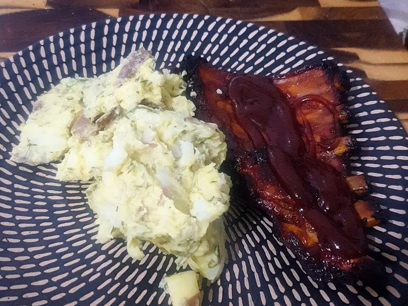

Фото: David Jackmanson from Melbourne, Australia, Australia, CC BY 2.0
.jpg){kind=link}
Свиные рёбра в духовке
Рёбрышки в медово-соевой глазури, мясо отходит от кости
160 мин8 порц.1009 ккал на порциюБ 47 · Ж 88 · У 9Американская кухня
Продукты на 8 порц.
- Свиные рёбра2400 г
- Соевый соус6 ст. л.
- Мёд2 ст. л.
- Горчица1 ст. л.
- Чеснок5 зуб.
- Паприка2 ч. л.
- Соль1,5 ч. л.
- Перец чёрный молотый0,5 ч. л.
- Вода1 стак.
Как готовить
- Рёбра разрежьте на порционные куски по 2-3 косточки.
- Смешайте соевый соус, мёд, горчицу, раздавленный чеснок, паприку, соль и перец.
- Обмажьте рёбра маринадом и оставьте на 30 минут, можно на ночь в холодильнике.
- Сложите рёбра в форму, влейте на дно воду, плотно накройте фольгой.
- Запекайте 90 минут при 160 °C (слабый жар), пока мясо не станет мягким.
- Снимите фольгу, смажьте рёбра соком из формы и запекайте ещё 20-25 минут при 200 °C (сильный жар) до тёмной блестящей корочки.
- Мясо готово, если легко отходит от кости при нажатии вилкой.
Совет. Не запекайте рёбра сразу без фольги на сильном жаре: мёд сгорит раньше, чем мясо станет мягким. Сначала долго под фольгой, глазурь в конце.